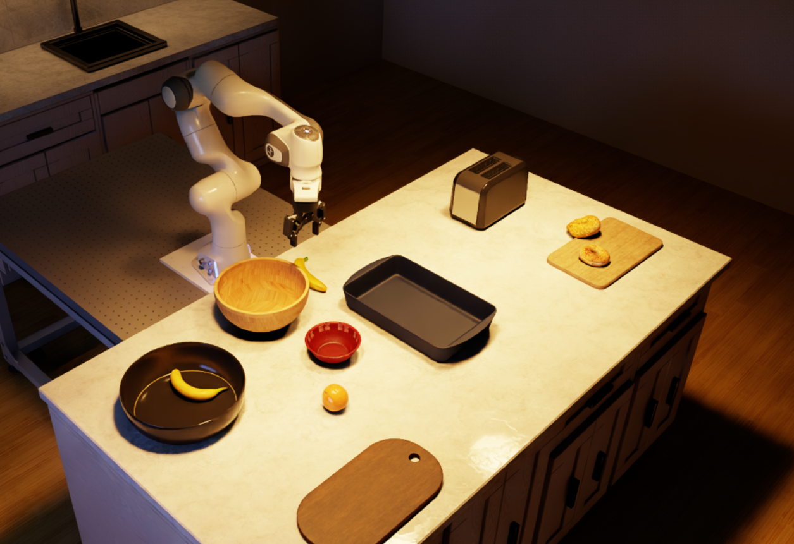
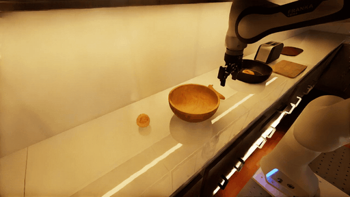

Author a kitchen_bench Environment with a Coding Agent#
This workflow uses a coding agent to generate a new environment that extends Arena’s KitchenBench benchmark with a new environment.


The environment the agent produced in our run, previewed in Kit.#
Prerequisites#
Complete the Arena installation, then set up either the native uv environment or the Arena Docker container:
Prepare the Arena runtime from the repository root, using either a native uv environment or the
base Docker container (see Installation for the full setup):
uv sync --extra dev
source .venv/bin/activate
export OMNI_KIT_ACCEPT_EULA=YES ACCEPT_EULA=Y
./docker/run_docker.sh
Install and authenticate your favourite coding agent on the host, then start it from the repository root. In our example, we use Codex with GPT-6 Astra and high reasoning effort.
Install the Codex CLI on the host using the official
installation guide,
then authenticate on the host with codex login.
Codex CLI 0.160.0 or newer is recommended, check with codex --version.
Viewing an Existing kitchen_bench Environment#
A similar existing environment is
kitchen_bench_replicator_g_shape_banana_and_orange_in_bowl, from the
Kitchen Benchmark Catalog.
Preview the existing scene by running it with some zero actions using:
python isaaclab_arena_examples/agentic_environment_generation/cli_runner.py \
--mode build \
--env_spec isaaclab_arena_environments/kitchen_bench/kitchen_bench_replicator_g_shape_banana_and_orange_in_bowl.yaml \
--num_envs 1 \
--num_steps 600 \
--placement_seed 42 \
--viz kit


A π0.5 policy placing the banana and the orange in the wooden bowl.#
Authoring a New kitchen_bench Environment#
In this example, we ask the agent to author a new environment in which the DROID robot is required to place a banana and an orange in two bowls, in a kitchen setting.
Start your favourite coding agent from the repository root. For this demonstration we’ll use Codex with GPT-6 Astra and high reasoning effort.
codex --model gpt-6-astra -c 'model_reasoning_effort="high"' --yolo
Note
The command above will start Codex in yolo mode, which means that the agent
runs commands without asking for approval and outside Codex’s sandbox.
Do this at your own risk.
Enter following prompt to the agent, that describes the scene, the spatial arrangement, and the task.
Build a new evaluation environment at
`isaaclab_arena_environments/agent_generated/peninsula_banana_and_orange_in_bowls.yaml`.
Use the Replicator peninsula kitchen with the DROID robot on a 0.8 m stand,
on the floor at the long side of the island, facing it. On the countertop,
place a wooden bowl and, farther from the robot, a red bowl; put a banana
next to the wooden bowl and an orange next to the red bowl. Layouts should
vary as much as possible between resets while keeping this arrangement: the
robot anywhere along the long side, with bowls and fruit moving with it, on
either side of existing counter items. The task is to put the banana in the
wooden bowl and the orange in the red bowl, in either order; it succeeds only
when both are in their bowls.
Assets:
- Kitchen: `replicator_kitchen_peninsula`
- Robot: `droid_abs_joint_pos`
- Wooden bowl: `wooden_bowl_hot3d_robolab`
- Red bowl: `bowl_ycb_robolab`
- Banana: `banana_ycb_robolab`
- Orange: `orange_01_fruits_veggies_robolab`
Note
Note that we’ve been quite specific in this demonstration prompt, including specifying the exact assets to use and the exact spatial arrangement. This is not necessary. We’ve done that here such that you get similar results to us.
Astra begins authoring the environment by inspecting Arena’s skills and writing the environment YAML.
Codex authoring the environment, shown at 10x speed.
The Result#
In our run, Astra completed and produced the following environment YAML after four revisions.
Environment YAML produced by the agent in our run
env_name: peninsula_banana_and_orange_in_bowls
embodiment:
id: droid
registry_name: droid_abs_joint_pos
params:
stand_height_m: 0.8
placement_bbox_stand_only: true
background:
id: kitchen
registry_name: replicator_kitchen_peninsula
params:
collision_mode: mesh
objects:
- id: wooden_bowl
registry_name: wooden_bowl_hot3d_robolab
- id: red_bowl
registry_name: bowl_ycb_robolab
- id: banana
registry_name: banana_ycb_robolab
- id: orange
registry_name: orange_01_fruits_veggies_robolab
object_references:
- id: floor
parent_id: kitchen
prim_path: KitchenRoom/Floor
object_type: base
- id: island_top
parent_id: kitchen
prim_path: CapSurface_02
object_type: base
# Keep the full long side available; collision and IK checks select feasible layouts.
relations:
- kind: is_anchor
subject: floor
- kind: is_anchor
subject: island_top
- kind: "on"
subject: droid
reference: floor
- kind: next_to
subject: droid
reference: island_top
params:
side: positive_y
distance_m: 0.15
tolerance_m: 0.15
- kind: rotate_around_solution
subject: droid
params:
yaw_rad: -1.5707963267948966
- kind: align_with
subject: droid
reference: wooden_bowl
params:
axis: x
tolerance_m: 0.15
# Keep the group close in depth without restricting travel along the island.
- kind: align_with
subject: droid
reference: wooden_bowl
params:
axis: y
offset_m: 0.6
tolerance_m: 0.2
- kind: "on"
subject: wooden_bowl
reference: island_top
- kind: "on"
subject: red_bowl
reference: island_top
# From the robot at +Y looking toward -Y, the red bowl is behind the wooden bowl.
- kind: next_to
subject: red_bowl
reference: wooden_bowl
params:
side: negative_y
distance_m: 0.05
tolerance_m: 0.04
- kind: align_with
subject: red_bowl
reference: wooden_bowl
params:
axis: x
tolerance_m: 0.04
- kind: "on"
subject: banana
reference: island_top
- kind: align_with
subject: banana
reference: wooden_bowl
params:
axis: x
tolerance_m: 0.4
- kind: align_with
subject: banana
reference: wooden_bowl
params:
axis: y
tolerance_m: 0.2
- kind: "on"
subject: orange
reference: island_top
- kind: align_with
subject: orange
reference: red_bowl
params:
axis: x
tolerance_m: 0.4
- kind: align_with
subject: orange
reference: red_bowl
params:
axis: y
tolerance_m: 0.2
placer_params:
allow_best_loss_fallbacks: false
env_cfg_override:
task_progress:
desired_subtask_success_state: [true, true]
task:
composition: parallel
description: Put the banana in the wooden bowl and the orange in the red bowl, in either order.
Both fruits must be in their respective bowls at completion.
subtasks:
- kind: PickAndPlaceTask
params:
pick_up_object: banana
destination_location: wooden_bowl
destination_object: wooden_bowl
background_scene: kitchen
- kind: PickAndPlaceTask
params:
pick_up_object: orange
destination_location: red_bowl
destination_object: red_bowl
background_scene: kitchen
To visualize the object placements in the environment, we can use the placement pool validation tool.
python isaaclab_arena/scripts/run_placement_pool_validation.py \
--env_spec isaaclab_arena_environments/agent_generated/peninsula_banana_and_orange_in_bowls.yaml \
--num_envs 1 \
--placement_seed 42 \
--viz kit \
--render
You should see something similar to the following video:
Ten reset layouts of the agent-authored peninsula kitchen environment.
Evaluate a Policy#
The new environment can be used to evaluate a policy straight away. Ask the agent to evaluate the pi05 DROID checkpoint on it through a local OpenPI server:
Evaluate the pi05 DROID policy on the environment at
`isaaclab_arena_environments/agent_generated/peninsula_banana_and_orange_in_bowls.yaml` for 3 episodes.
Record camera videos, and open the evaluation report in my browser when it's done.
The repository’s run-experiment and serve-openpi-policy skills guide
the agent through the evaluation. Expect it to:
Write the Experiment: write a one-Run Experiment that points at your environment and uses
Pi0RemotePolicywith thepi05variant and the DROID adapter.Start pi0.5: reuse a running OpenPI server for that variant and port, or start one with
./isaaclab_arena_openpi/docker/run_openpi_server.sh. The first start builds theisaaclab_arena:openpi_serverimage (~3 min, ~19 GB) and downloads the ~11 GB checkpoint, so the agent should ask before starting it.Run the evaluation: run the Experiment with
isaaclab_arena/evaluation/experiment_runner.pyand the--record_camera_videoflag, then report the results.Open the report: open the
index.htmlevaluation report from the run’s output directory underoutputs/in your browser.
An episode only counts as a success when both fruits are in their bowls. The
results also include subtask_success_rate, the success rate for each fruit,
so you can see which placement the policy completed.
The report shows each episode’s result next to its recorded videos, one per camera.
A pi05 episode on the environment from our run, shown at 5x speed from the two external cameras and the wrist camera. The policy places the orange in the red bowl but not the banana in the wooden bowl, so the episode times out without success.
Experiment for the environment from our run
runs:
peninsula_banana_and_orange_pi05:
environment:
type: isaaclab_arena_environments/agent_generated/peninsula_banana_and_orange_in_bowls.yaml
enable_cameras: true
environment_builder:
num_envs: 1
placement_seed: 42
policy:
type: isaaclab_arena_openpi.policy.pi0_remote_policy.Pi0RemotePolicy
policy_variant: pi05
policy_device: cuda:0
remote_host: 127.0.0.1
remote_port: 8000
openpi_embodiment_adapter: droid
rollout_limit:
num_episodes: 3
See OpenPI for running the server and the Experiment Runner yourself.
Going Further#
The environment YAML plugs straight into an Arena Experiment runner and can be used in all Arena evaluation workflows. For example:
Parallel evaluation: The environment can be run across many parallel environments. See Run an Evaluation with Recorded Variations.
Multi-node evaluation: The same environment can be evaluated across a multi-node cluster with OSMO. See Multi-Node Evaluation.
Variations: Expose the policy to controlled perturbations through Arena’s variation system. See Run an Evaluation.
Metrics: By default, Arena collects evaluation-oriented metrics which can be viewed after an experiment run. See Sensitivity Analysis.
Task validation without a policy: Check that the task can be completed by driving the fruit into the bowls with bounded forces. See Object Control Runner.